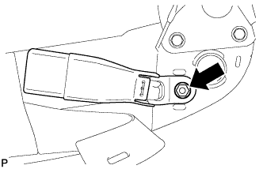
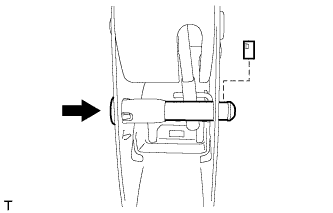

ЗАДНЕЕ СИДЕНЬЕ № 1 В СБОРЕ (для моделей с опускаемым сиденьем раздельного типа 60/40 с правой стороны) > ПОВТОРНАЯ СБОРКА |
| 1. УСТАНОВИТЕ ТРОС ФИКСАЦИИ ПРАВОГО СКЛАДЫВАЮЩЕГОСЯ СИДЕНЬЯ № 1 В СБОРЕ |
Установите трос на каркас подушки сиденья.
Закрепите 3 зажима троса и подсоедините трос.
Установите 2 новых бандажа жгута.
| 2. УСТАНОВИТЕ РАМУ СПИНКИ ПРАВОГО ЗАДНЕГО СИДЕНЬЯ В СБОРЕ |
Установите раму спинки сиденья и закрепите ее 4 болтами.
| 3. УСТАНОВИТЕ ВНУТРЕННЮЮ ОТКИДНУЮ КРЫШКУ ЛЕВОГО ЗАДНЕГО СИДЕНЬЯ |
Введите в зацепление 2 направляющие, чтобы установить крышку.
| 4. УСТАНОВИТЕ ВНУТРЕННЮЮ ОТКИДНУЮ КРЫШКУ ПРАВОГО ЗАДНЕГО СИДЕНЬЯ |
Введите в зацепление 2 направляющие, чтобы установить крышку.
| 5. УСТАНОВИТЕ ВНУТРЕННЮЮ ОТКИДНУЮ КРЫШКУ ЛЕВОГО ЗАДНЕГО СИДЕНЬЯ |
Закрепите 2 направляющие и 2 захвата, чтобы установить накладку.
| 6. УСТАНОВИТЕ ВНУТРЕННЮЮ ОТКИДНУЮ КРЫШКУ ПРАВОГО ЗАДНЕГО СИДЕНЬЯ |
Закрепите 2 направляющие и 2 захвата, чтобы установить накладку.
| 7. УСТАНОВИТЕ ТРОС № 1 ФИКСАЦИИ ЗАДНЕГО СИДЕНЬЯ В СБОРЕ |
Установите трос на каркас спинки сиденья.
Закрепите 2 зажима троса и подсоедините трос.
| 8. УСТАНОВИТЕ ОБИВКУ СПИНКИ РАЗДЕЛЬНОГО ЗАДНЕГО СИДЕНЬЯ |
Установите обивку спинки сиденья, закрепите ее 2 новыми витковыми пружинами и установите крепежную ленту.
| *1 | Щипцы для витковых пружин |
| *2 | Крепежная лента |
С помощью щипцов для витковых пружин установите новые витковые пружины.
| 9. УСТАНОВИТЕ ОБИВКУ СПИНКИ СИДЕНЬЯ ВМЕСТЕ С ПОДУШКОЙ |
Присоедините 2 крепления, чтобы установить обивку спинки сиденья с подушкой.
| 10. УСТАНОВИТЕ ДЕРЖАТЕЛЬ ПОДГОЛОВНИКА ЗАДНЕГО СИДЕНЬЯ № 1 В СБОРЕ |
Введите в зацепление 4 захвата, чтобы закрепить 2 держателя.
| 11. УСТАНОВИТЕ РЫЧАГ ЗАМКА ПРАВОГО ЗАДНЕГО СИДЕНЬЯ В СБОРЕ |
 |
Подсоедините трос в порядке, показанном на рисунке, и установите рычаг.
Заверните 2 винта.
| 12. УСТАНОВИТЕ КРЫШКУ ЗАЩЕЛКИ ЗАМКА СПИНКИ ЗАДНЕГО СИДЕНЬЯ |
 |
Введите в зацепление направляющую и захват, чтобы установить крышку.
| 13. УСТАНОВИТЕ ПОДУШКУ СПИНКИ ПРАВОГО СИДЕНЬЯ № 1 |
Установите подушку спинки сиденья.
Закройте 2 крепления, а затем закройте обивку спинки сиденья.
С помощью щипцов для витковых пружин установите 3 новые витковые пружины.
| *1 | Щипцы для витковых пружин |
Установите 3 крепежные ленты и закройте крышку.
| 14. УСТАНОВИТЕ ОБИВКУ СПИНКИ ЗАДНЕГО СИДЕНЬЯ |
Введите в зацепление 4 захвата, чтобы закрепить обивку.
| 15. УСТАНОВИТЕ ОБИВКУ ПОДУШКИ РАЗДЕЛЬНОГО ЗАДНЕГО СИДЕНЬЯ |
Установите обивку подушки сиденья на подушку сиденья и закрепите ее новыми витковыми пружинами, используя щипцы для витковых пружин.
| *1 | Щипцы для витковых пружин |
| 16. УСТАНОВИТЕ ВНУТРЕННЕЕ КРАЕВОЕ УКРЕПЛЕНИЕ ПОДУШКИ ПРАВОГО ЗАДНЕГО СИДЕНЬЯ |
Закрепите краевое укрепление новыми закрепками.
| 17. УСТАНОВИТЕ ОБИВКУ ПОДУШКИ СИДЕНЬЯ ВМЕСТЕ С ПОДУШКОЙ |
Используя щипцы для витковых пружин, закрепите обивку спинки сиденья с подушкой новыми витковыми пружинами.
| *1 | Щипцы для витковых пружин |
Установите коврик и закрепите его новыми закрепками.
| 18. УСТАНОВИТЕ ЗАМОК РЕМНЯ БЕЗОПАСНОСТИ ЛЕВОГО ЗАДНЕГО СИДЕНЬЯ № 1 В СБОРЕ |
|  |
Отверните гайку и снимите замок ремня.
| 19. УСТАНОВИТЕ НАКЛАДКУ ПЕТЛИ ЛЕВОГО ЗАДНЕГО СИДЕНЬЯ № 2 |
Введите в зацепление 3 захвата, чтобы установить крышку.
| 20. УСТАНОВИТЕ НАКЛАДКУ ПРАВОЙ ПЕТЛИ ЗАДНЕГО СИДЕНЬЯ № 2 |
Введите в зацепление 3 захвата, чтобы установить крышку.
| 21. УСТАНОВИТЕ НИЖНЮЮ КРЫШКУ ПОДУШКИ ПРАВОГО ЗАДНЕГО СИДЕНЬЯ В СБОРЕ |
Временно установите нижнюю крышку на каркас подушки сиденья.
| 22. УСТАНОВИТЕ ОПОРНУЮ ПРУЖИНУ ПОДУШКИ ЗАДНЕГО СИДЕНЬЯ |
Установите пружину на каркас подушки сиденья.
| 23. УСТАНОВИТЕ ПОДКЛАДКУ ЗАМКА НОЖКИ СКЛАДЫВАЮЩЕГОСЯ СИДЕНЬЯ |
Установите подушку на защитный элемент.
| 24. УСТАНОВИТЕ КРАЕВОЕ УКРЕПЛЕНИЕ ПОДУШКИ ЗАДНЕГО СИДЕНЬЯ |
Установите защитный элемент на каркас подушки.
| 25. УСТАНОВИТЕ СТОЙКУ ЗАДНЕГО СИДЕНЬЯ В СБОРЕ |
Подсоедините шаровой шарнир стойки сиденья к петле сиденья.
| 26. УСТАНОВИТЕ ПЕТЛЮ ПРАВОГО ЗАДНЕГО СИДЕНЬЯ № 1 В СБОРЕ |
Установите пружину шарового шарнира стойки сиденья.
Временно установите петлю сиденья и стойку сиденья как единый узел.
Поднимите нижнюю крышку.
Подсоедините стойку сиденья к раме подушки сиденья.
Подсоедините ручку отпускания регулятора наклона к нижней крышке.
Вверните 4 болта.
Установите нижнюю крышку, для чего введите в зацепление 6 захватов.
Установите штифт на петлю.
Установите новое разрезное уплотнение.
| 27. УСТАНОВИТЕ ПЕТЛЮ ЛЕВОГО ЗАДНЕГО СИДЕНЬЯ № 1 В СБОРЕ |
Установите петлю.
Установите штифт на петлю.
Установите новое разрезное уплотнение.
| 28. УСТАНОВИТЕ НАПРАВЛЯЮЩУЮ ШТИФТА ПЕТЛИ ЗАДНЕГО СИДЕНЬЯ |
Введите в зацепление 4 захвата, чтобы установить направляющую штифта.
| 29. УСТАНОВИТЕ ШТИФТ РЫЧАГА ОТПИРАНИЯ НАПРАВЛЯЮЩЕЙ СИДЕНЬЯ В СБОРЕ |
|  |
Установите штифт, как показано на рисунке.
Установите стопор.
| 30. УСТАНОВИТЕ ОТКИДНУЮ КРЫШКУ ПРАВОГО ЗАДНЕГО СИДЕНЬЯ № 1 |
Переместите крышку в направлении, указанном на рисунке стрелкой, чтобы ввести в зацепление направляющую.
Введите в зацепление 2 захвата.
Установите крышку и закрепите ее 2 винтами.
| 31. УСТАНОВИТЕ ОТКИДНУЮ КРЫШКУ ЛЕВОГО ЗАДНЕГО СИДЕНЬЯ № 1 |
Введите в зацепление 2 крюка.
 |
Переместите крышку в направлении, указанном на рисунке стрелкой, чтобы ввести в зацепление направляющую.
Введите в зацепление 2 захвата.
Установите крышку и закрепите ее 2 винтами.